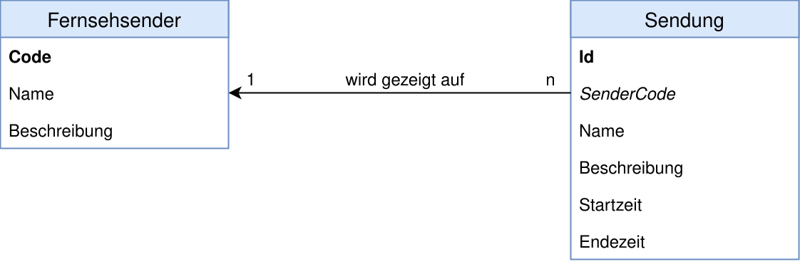

Juhu, endlich Feierabend. Jetzt schnell auf die Couch 🛋️, Füße hochlegen und den Rest des Abends vor dem Fernseher verbringen. 📺 Doch was soll man sich anschauen? 🤔 Vergessen wir für einen Moment, dass es inzwischen ja auch Netflix, Amazon Video und Youtube gibt und fragen uns:
Ach wie praktisch wäre jetzt eine App, die uns das aktuelle Fernsehprogramm aller Fernsehsender anzeigen könnte. Diese App (bzw. nur den Serverteil und den dazugehörigen SOAP-Webservice) wollen wir daher nun programmieren.
Damit es nicht zu aufwändig wird, fangen wir mit einem ganz einfachen Datenmodell an. Es gibt lediglich Fernsehsender und von ihnen gezeigte Sendungen:
Die Felder Code und Name eines Senders sind dabei so zu verstehen, dass anstelle einer fortlaufenden ID ein frei vergebbares Buchstabenkürzel als Schlüsselfeld verwendet wird:
| Code | Name |
|---|---|
| ARD | Arbeitsgemeinschaft Rundfunk Deutschland |
| ZDF | Zweites Deutsches Fernsehen |
| SWR | Südwestrundfunk |
| PRO7 | ProSieben |
| Kabel1 | Kabel eins |
| … | |
Lege ein neues Java-Webprojekt an und definiere darin die oben gezeigten Persistence Entities, sowie je Persistence Entity eine Stateless Session Bean mit den üblichen Methoden zum Lesen, Schreiben und Löschen von Datensätzen.¹
¹ Tipp: Mit der abstrakten EntityBean aus den JPA-Folien geht es schneller. 🤓
Die Felder für Start und Ende einer Sendung kannst du wie folgt anlegen. Beide Felder beinhalten dabei sowohl ein Datum als auch eine Uhrzeit:
import java.util.Date;
…
@Temporal(TemporalType.TIMESTAMP)
private Date startTime = new Date();
@Temporal(TemporalType.TIMESTAMP)
private Date endTime = new Date();
Damit ist das Fundament gelegt. 🏚️ Weiter geht es mit einer neuen Klasse für den Webservice. Programmiere daher auf Grundlage der EJBs einen SOAP-Webservice, der folgende Funktionen beinhaltet:
Die Javamethoden hierfür sollten ungefähr so aussehen:
Sender senderAnlegen(Sender sender);
Sendung sendungAnlegen(Sendung sendung);
List<Sender> alleSenderAuslesen();
List<Sendung> sendungenSuchen(Date startVon, Date startBis);
Teste den Webservie ausgiebig in SoapUI, bevor du weiter machst.
Datum und Uhrzeit musst du als 2018-03-12T20:15:00 schicken, wenn du den 12.03.2018, 20:15 Uhr meinst.
████████╗██╗ ██╗ ██████╗ ██╗ ██████╗ ██████╗ █████╗ ██╗ ╚══██╔══╝██║ ██║ ██╔════╝ ██║ ██╔═══██╗██╔══██╗██╔══██╗██║ ██║ ██║ ██║ ██║ ███╗██║ ██║ ██║██████╔╝███████║██║ ██║ ╚██╗ ██╔╝ ██║ ██║██║ ██║ ██║██╔══██╗██╔══██║██║ ██║ ╚████╔╝ ╚██████╔╝███████╗╚██████╔╝██████╔╝██║ ██║███████╗ ╚═╝ ╚═══╝ ╚═════╝ ╚══════╝ ╚═════╝ ╚═════╝ ╚═╝ ╚═╝╚══════╝ ========= Hauptmenü ========= [S] Sendungen suchen [E] Ende Deine Auswahl: S ================ Sendungen suchen ================ Startdatum von (yyyy-mm-dd) : 2018-03-12 Startzeit von (hh:mm:ss) : 20:15:00 Startdatum bis (yyyy-mm-dd) : 2018-03-12 Startzeit bis (hh:mm:ss) : 22:00:00 Gefundene Sendungen: Sender: ARD Sendung: Der blaue Planet Beschreibung: Dokumentation (D 2017) - Auf hoher See Startzeit: 12.03.2018, 20:15 Endezeit: 12.03.2018, 21:00 Sender: ZDF Sendung: Neben der Spur - Sag, es tut dir leid Beschreibung: Thriller (D 2018) Startzeit: 12.03.2018, 20:15 Endezeit: 12.03.2018, 21:45 ========= Hauptmenü ========= [S] Sendungen suchen [E] Ende Deine Auswahl: E Auf wiedersehen!
Im Hauptmenü sowie bei der Suche nach Sendungen muss das Programm logischweise anhalten und die Eingabe des Benutzers abwarten. Folgenden Code kannst du hierfür verwenden:
BufferedReader fromKeyboard = new BufferedReader(new InputStreamReader(System.in);
String input = fromKeyboard.readLine();
Das Datum/Uhrzeit-Objekt für den Aufruf des Webservices kannst du wie folgt erzeugen:
DatatypeFactory dtf = DatatypeFactory.newInstance();
XMLGregorianCalendar startTimeFrom = dtf.newXMLGregorianCalendar(
eingegebenesDatum + "T" + eingegebeneUhrzeit);
Ein vom Webservice empfangenes Datum/Uhrzeit-Objekt kannst du wie folgt für die Ausgabe formiatieren:
SimpleDateFormat fmt = new SimpleDateFormat("dd.MM.yyyy, HH:mm");
Date date = empfangenesDatum.toGregorianCalendar().getTime();
System.out.println("Datum und Uhrzeit in schön: " + fmt.format(date));